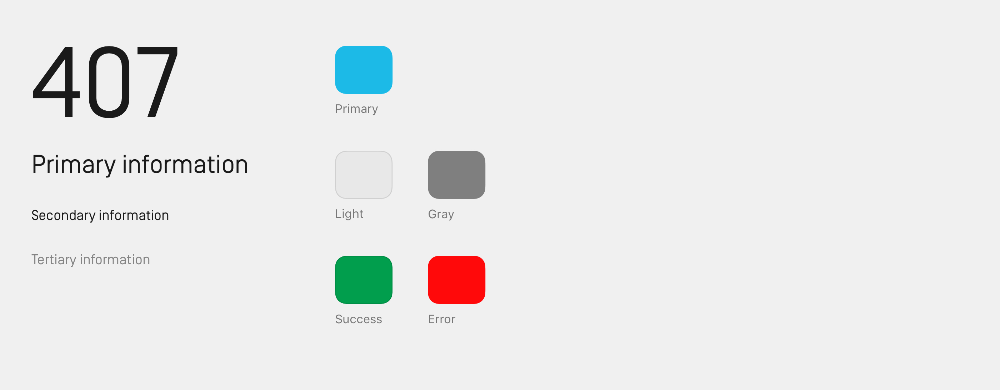

EV hypercar infotainment design — Automotive UI Design, UX Design
User interface design for one of the most advanced cars on the planet.
Rimac C_TWO is a semi-autonomous, all-electric sports car designed and manufactured in Croatia. Reaching over 400 km/h, and accelerating to 100 km/h in under 2 seconds, C_TWO requires a unique design approach.
The challenge
Evaluate and redesign the user interface for Rimac C_TWO. Information on the previous interface was limited.
My process
I analyzed the existing state of the interface through screenshots of the existing design. After extensive research into other EV cars on the market, usage scenarios and user goals were defined based on the communicated capabilities of C_TWO — going on a Grand Tour.
Results
The goal was to keep the user focused on the experience of driving — while using the vast technical capabilities of the car to redefine usual automotive design patterns. Elements that didn't serve the purpose of timely informing the user were removed from the infotainment.
I came up with an innovative way of displaying data — according to the current speed of the car.
Exploration phase
Researching competing EVs, I realized that most had dated interfaces with awful usability. The industry as a whole was a couple of years behind mobile/web software design
While defining the scenario I decided on a different approach — both car and driver are treated as users. This made me look at interface design from a completely different perspective. With clear goals for both car and the driver, it was easier to decide what information to show, and when to show it.
During initial sketches, I explored various layouts.
The human-machine interface of Rimac C_TWO is represented by 3 main screens and 4 types of physical controls. Buttons on the steering wheel, R1, and R2 are great for navigating the interface, while R3 and R4 are radial dials, perfect for adjusting values.
Converging on a solution
Color selection was based on a special version of C_TWO — Arctic White. For extra inspiration, I explored video games, figther jet cockpits, and old race cars.
Sport mode — vehicle static.
Range and speed are prominently displayed in the middle of the screen, accomplishing the goal of keeping the user focused on the driving, and timely informed. Temperature and speed limit are displayed only when necessary. I placed all navigation elements on the sides of the screen, while the top and bottom are reserved for information regarding the various car systems.
Sport mode — vehicle moving.
Increased focus is necessary with increasing speeds. Range and speed stay visible while everything else fades away. This keeps them visible in periphery vision — no need to take your eyes off the road. The interior is equipped with a driver-facing camera, so the car knows where the driver is looking. If the driver looks at the instrument cluster, all information pops back to full opacity.
Dynamic interface changes based on circumstances — keeping the driver up to date about any future issues.

Track mode
Lap time is the main focus in track mode. Since drivers have time to scan the cluster while driving on the straight part of the track, more information regarding the current lap and session are shown in this mode.
Other cars on track are detected via sensors and cameras on the exterior of C_TWO.
Design system
Simplon Norm, a geometric sans serif with a technical spirit was selected for its readability and space-saving properties. The minimalist color palette is based on the primary color — unique for every C_TWO — depending on the exterior styling.
— thank you